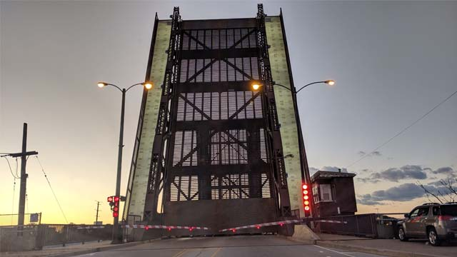

My name is Juan Gonzalez and I am a second year student at Illinois Tech.
I am majoring in Computer Information Systems with a minor in Information Technology & Management.
I am 19 years old and am from the East Side of Chicago.
I am a first generation college student.
I have traveled outside of the United States.
I taught myself the basics of progamming before I started college.
My Neighborhood
Here are some photos of my neighborhood, both taken by me.

This is a video of me driving through a bridge in my neighborhood that was actually closed for about 6 months. It has an infamous reputation for breaking down a lot!